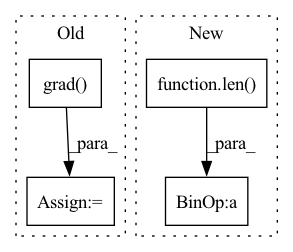

Pattern ID :25732
Before Change
// ! Mabye replace with child.loss by adding self.loss attribute to save computation
in_loss = child.training_step(child.cur_batch)
in_grad = torch.autograd.grad( in_loss, child.trainable_parameters(), create_graph=True)
v2 = approx_inverse_hvp(v1, in_grad, child.trainable_parameters(),
iterations=config.neumann_iterations,
alpha=config.neumann_alpha)
implicit_grad = torch.autograd.grad(in_grad, params, grad_outputs=v2)
return [sub_with_none(dg, ig) for dg, ig in zip(direct_grad, implicit_grad)]
After Change
implicit_grad = torch.autograd.grad(loss,
path[1].trainable_parameters(),
retain_graph=False)
for i in range(1, len( path)- 1):
implicit_grad = neumann_helper(implicit_grad, path[i], path[i+1], config)
return [sub_with_none(dg, ig) for dg, ig in zip(direct_grad, implicit_grad)]In pattern: SUPERPATTERN
Frequency: 3
Non-data size: 4
Instances Fragment ID: 77994006
Project Name: leopard-ai/betty
Commit Name: 5576beb63f931a42bedc2b2397d20b80515cee1e
Time: 2022-04-23
Author: sangkeuc@andrew.cmu.edu
File Name: betty/hypergradient/neumann.py
M Class Name: AnonimousClass
N Class Name: AnonimousClass
M Method Name: neumann(7)
N Method Name: neumann(7)
M Parent Class:
N Parent Class:
M File Name: betty/hypergradient/neumann.py
N File Name: betty/hypergradient/neumann.py
M Start Line: 15
M End Line: 25
N Start Line: 15
N End Line: 21
Before Change
//////////beta
v_betas = tuple(self.v_net.betas())
v_bgrads = torch.autograd.grad( loss, v_betas + v_weights)
dbeta = v_bgrads[:len(v_betas)]
dbw = v_bgrads[len(v_betas):]
hessianb = self.compute_hessian(dbw, trn_X, trn_y,1)After Change
v_grads = torch.autograd.grad(loss, v_alphas + v_betas + v_weights,retain_graph=True)
dalpha = v_grads[:len(v_alphas)]
dbeta = v_grads[len(v_alphas):len(v_alphas)+len(v_betas)]
dw = v_grads[len( v_alphas)+ len(v_betas):]
hessiana = self.compute_hessian(dw, trn_X, trn_y)
hessianb = self.compute_hessian(dw, trn_X, trn_y, 1) Fragment ID: 77994021
Project Name: mac-automl/xnas
Commit Name: 2afa9c296312d2a5ae477efb3e859863de69654b
Time: 2020-07-16
Author: 1004463561@qq.com
File Name: xnas/search_algorithm/pc_darts.py
M Class Name: Architect
N Class Name: Architect
M Method Name: unrolled_backward(7)
N Method Name: unrolled_backward(7)
M Parent Class:
N Parent Class:
M File Name: xnas/search_algorithm/pc_darts.py
N File Name: xnas/search_algorithm/pc_darts.py
M Start Line: 182
M End Line: 203
N Start Line: 189
N End Line: 197
Before Change
_output = self.model(_input.to(env["device"]))[:, target].sum()
// torch.max type: (data, indices), we only need [0]
grad = torch.autograd.grad( _output, _input) [0].max(dim=1, keepdim=True)[0] // (B, 1, H, W)
_input.requires_grad = False
saliency_maps.append(grad.cpu())
return torch.cat(saliency_maps)After Change
saliency_maps = []
for data in loader:
_input, _label = self.model.get_data(data)
saliency_map = self.model.get_saliency_map(_input, [target] * len( _input) )
saliency_maps.append(saliency_map.detach().cpu())
return torch.cat(saliency_maps)
Fragment ID: 77994016
Project Name: ain-soph/trojanzoo
Commit Name: 2bf7c2a2e8acba2592ee17d60d1a59b7bd1bbfe5
Time: 2020-11-24
Author: ain-soph@live.com
File Name: trojanzoo/defense/backdoor/neuron_inspect.py
M Class Name: Neuron_Inspect
N Class Name: Neuron_Inspect
M Method Name: get_saliency_map(3)
N Method Name: get_saliency_map(3)
M Parent Class: Defense_Backdoor
N Parent Class: Defense_Backdoor
M File Name: trojanzoo/defense/backdoor/neuron_inspect.py
N File Name: trojanzoo/defense/backdoor/neuron_inspect.py
M Start Line: 73
M End Line: 80
N Start Line: 73
N End Line: 76